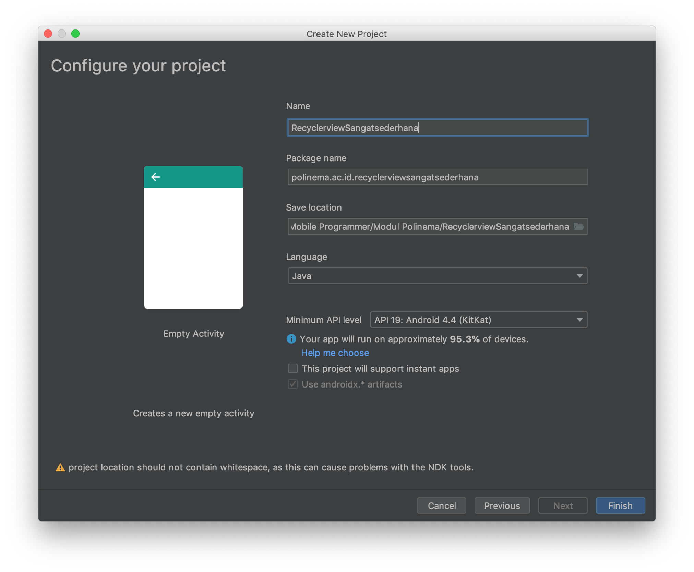
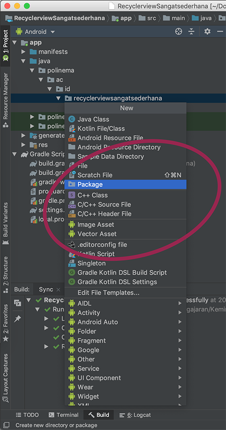
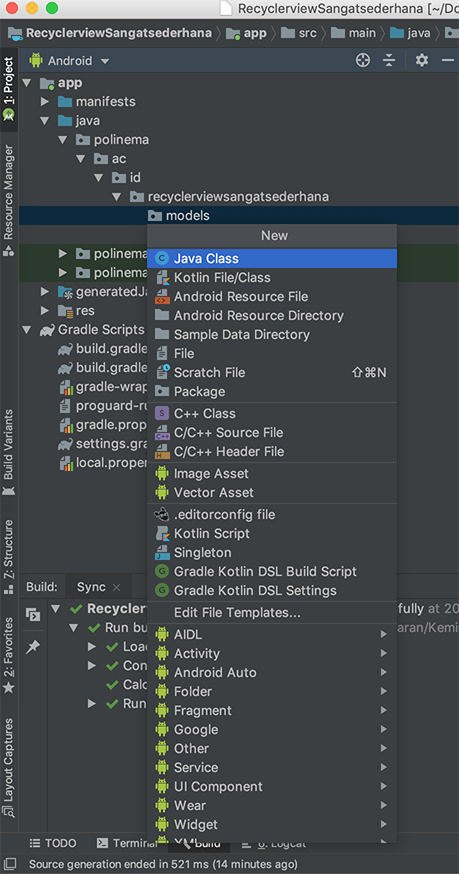
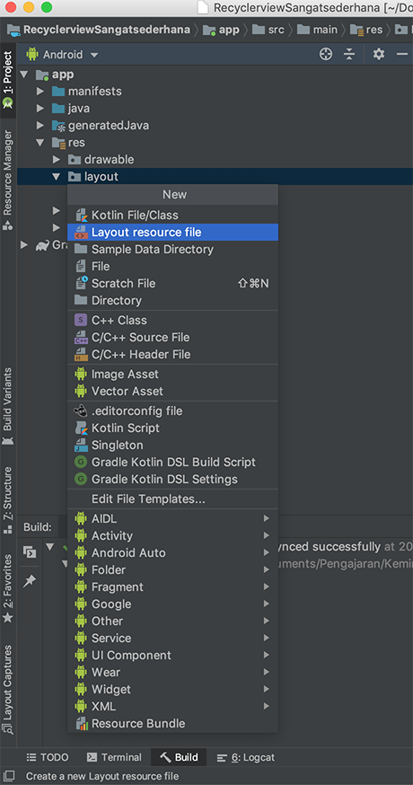
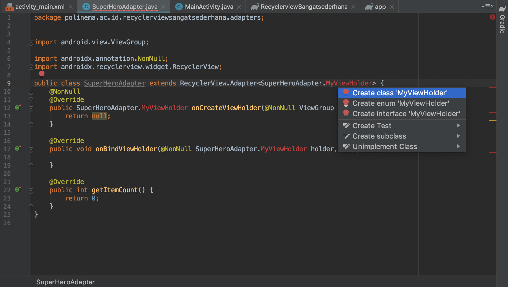

RecyclerView Sangat Sederhana
Pada Praktikum kali ini kita akan membuat sebuah recyclerview yang sangat sederhana dimana pada recyclerview ini hanya terdapat sebuah item text view.
Hasil Yang Diharapkan
New Project
Buatlah sebuah project baru sesuaikan konfigurasi project ini dengan environtment SDK pada Android Studio anda, contoh konfigurasinya :

Dependency
Dependency yang digunakan pada project ini adalah dependency untuk recyclerview, namun karena ada perbedaan pada versi android sdk yang digunakan berikut ini disediakan beberapa konfigurasi build.gradle pada module app yang digunakan.
Untuk sdk 29 sudah menggunakan androidx
implementation 'androidx.recyclerview:recyclerview:1.1.0'
Untuk sdk dibawah 29 menggunakan support library. Contoh untuk sdk 28 menggunakan versi recyclerview dibawah ini
implementation 'com.android.support:recyclerview-v7:28.0.0'
Perhatikan target sdk version yang anda gunakan pada file build.gradle untuk module app dan isikan recyclerview yang sesuai dengan kebutuhan anda.
Contoh dependency :
dependencies {
implementation fileTree(dir: 'libs', include: ['*.jar'])
implementation 'androidx.appcompat:appcompat:1.0.2'
implementation 'androidx.constraintlayout:constraintlayout:1.1.3'
implementation 'androidx.recyclerview:recyclerview:1.0.0'
testImplementation 'junit:junit:4.12'
androidTestImplementation 'androidx.test:runner:1.2.0'
androidTestImplementation 'androidx.test.espresso:espresso-core:3.2.0'
}
Model
Berdasarkan hasil yang diharapkan dapat dilihat bahwa pada recyclerview yang dihasilkan hanya memiliki satu data yaitu sebuah text oleh karena itu model di desain sesuai dengan kebutuhan pada hasil akhir. Lakukanlah langkah langkah berikut ini untuk membuat file model pada project ini.
Buat Package Models
Agar file file yang ada pada project tersusun rapi buatlah sebuah package dengan nama models sebagai tempat untuk menyimpan file models.

Beri nama package models

Buat Class Models
Buatlah sebuah file baru pada package models beri nama file tersebut SuperHero dan beri tipe class


Isi Class Models
Isilah class SuperHero dengan sebuah attribut public bernama heroName dan lengkapi dengan construktor serta setter dan getter
package polinema.ac.id.recyclerviewsangatsederhana.models;
public class SuperHero {
public String heroName;
public SuperHero(String heroName) {
this.heroName = heroName;
}
public String getHeroName() {
return heroName;
}
public void setHeroName(String heroName) {
this.heroName = heroName;
}
}
Item Layout
Layout pada recyclerview ini berupa sebuah layout xml sederhana silahkan anda memilih layout mana saja asalkan dapat menampilkan sebuah textview. Berikut ini contoh langkah langkah untuk membuat item layout.


Contoh kode program item_super_hero.xml
<?xml version="1.0" encoding="utf-8"?>
<LinearLayout xmlns:android="http://schemas.android.com/apk/res/android"
android:orientation="vertical" android:layout_width="match_parent"
android:layout_height="50dp">
<TextView
android:gravity="center"
android:id="@+id/heroName"
android:layout_width="match_parent"
android:layout_height="wrap_content"
android:text="Hero Name"
android:textSize="20sp"
/>
</LinearLayout>
Recycler Layout
Bukalah file activity_main.xml kemudian hapus textview hello world nya

Kemudian isikan sebuah recyclerview dan setting constraint nya untuk memenuhi seluruh layar
<?xml version="1.0" encoding="utf-8"?>
<androidx.constraintlayout.widget.ConstraintLayout xmlns:android="http://schemas.android.com/apk/res/android"
xmlns:app="http://schemas.android.com/apk/res-auto"
xmlns:tools="http://schemas.android.com/tools"
android:layout_width="match_parent"
android:layout_height="match_parent"
tools:context=".MainActivity">
<androidx.recyclerview.widget.RecyclerView
app:layout_constraintLeft_toLeftOf="parent"
app:layout_constraintRight_toRightOf="parent"
app:layout_constraintTop_toTopOf="parent"
app:layout_constraintBottom_toBottomOf="parent"
android:layout_width="match_parent"
android:layout_height="match_parent"
tools:layout_editor_absoluteX="8dp"
tools:layout_editor_absoluteY="8dp" />
</androidx.constraintlayout.widget.ConstraintLayout>

Adapter
Adapter adalah bagian terpenting dari sebuah recyclerview oleh karena itu perhatikanlah langkah langkah pembuatan Adapter berikut ini dengan seksama.
Buat Package Adapter
Buatlah package adapters pada project dengan langkah berikut ini :


Buat Class Adapter
Buatlah sebuah class pada package adapters berilah nama SuperHeroAdapter

Kode program hasil pembuatan class SuperHeroAdapter
package polinema.ac.id.recyclerviewsangatsederhana.adapters;
public class SuperHeroAdapter {
}
Extends
Sebuah adapter harus melakukan extend ke class RecyclerView.Adapter


Pada langkah ini akan terjadi error yang akan kita perbaiki pada tahap selanjutnya
Implement Methods
Pindahkan cursor pada awal class RecyclerView kemudian pilih alt+insert untuk windows atau alt + enter untuk mac os kemudian pilih Implements Methods.


Pilih semua method dan hasilnya ada seperti berikut ini :
package polinema.ac.id.recyclerviewsangatsederhana.adapters;
import android.view.ViewGroup;
import androidx.annotation.NonNull;
import androidx.recyclerview.widget.RecyclerView;
public class SuperHeroAdapter extends RecyclerView.Adapter<SuperHeroAdapter.MyViewHolder> {
@NonNull
@Override
public SuperHeroAdapter.MyViewHolder onCreateViewHolder(@NonNull ViewGroup parent, int viewType) {
return null;
}
@Override
public void onBindViewHolder(@NonNull SuperHeroAdapter.MyViewHolder holder, int position) {
}
@Override
public int getItemCount() {
return 0;
}
}
Inner Class
Sampai pada saat ini class yang anda buat masih error, lanjutkan dengan memindahkan cursor ke MyViewHolder kemudian tekan kembali alt+insert atau alt+enter kemudian pilih create class

Hasil dari perintah diatas seperti gambar dibawah ini

Class nya masih error arahkan cursor ke SuperHeroAdapter.MyViewHolder kemudian pilih opsi Make MyViewHolder extends ...

Berikut ini hasilnya, namun masih ada error untuk memperbaiki error lanjutkan ke langkah selanjutnya

Pindahkan kursor ke kode program yang masih merah kemudian tekan kembali alt+enter atau alt+insert kemudian pilih opsi create constructor matching super

Berikut ini hasil dari proses pembuatan Adapter (masih separoh jalan :) )
package polinema.ac.id.recyclerviewsangatsederhana.adapters;
import android.view.View;
import android.view.ViewGroup;
import androidx.annotation.NonNull;
import androidx.recyclerview.widget.RecyclerView;
public class SuperHeroAdapter extends RecyclerView.Adapter<SuperHeroAdapter.MyViewHolder> {
@NonNull
@Override
public SuperHeroAdapter.MyViewHolder onCreateViewHolder(@NonNull ViewGroup parent, int viewType) {
return null;
}
@Override
public void onBindViewHolder(@NonNull SuperHeroAdapter.MyViewHolder holder, int position) {
}
@Override
public int getItemCount() {
return 0;
}
public class MyViewHolder extends RecyclerView.ViewHolder {
public MyViewHolder(@NonNull View itemView) {
super(itemView);
}
}
}
Langkah selanjutnya adalah mengisi dan memahami fungsi dari masing masing function dan inner class yang ada pada adapter